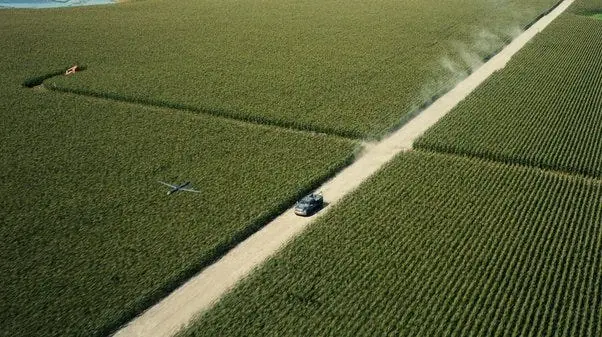
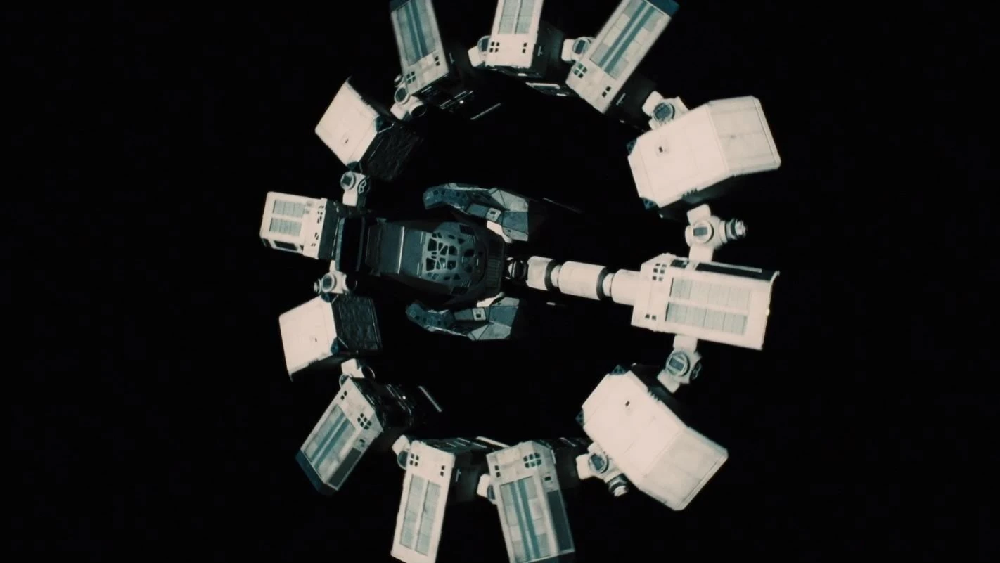
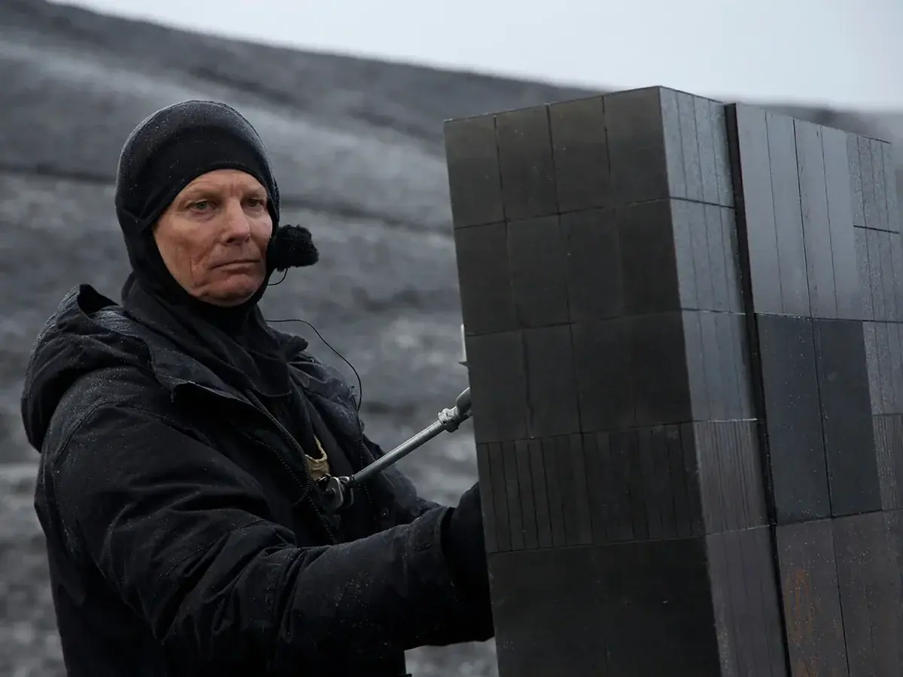
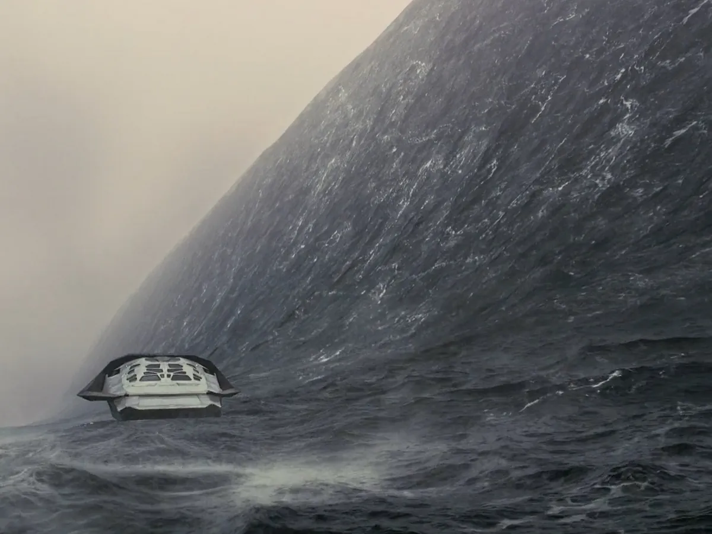
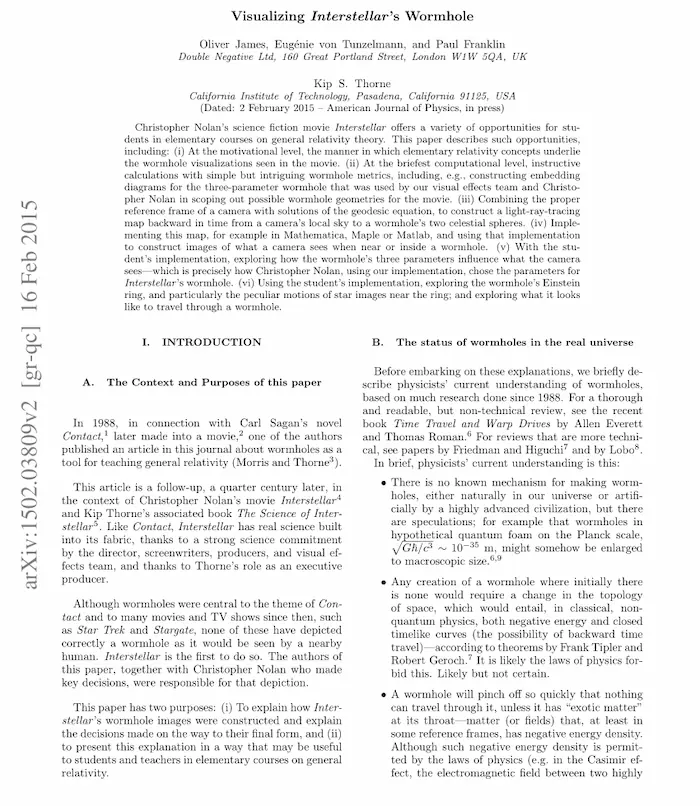

Uno de los más llamativos fue recrear el entorno agrícola en decadencia de la Tierra, el
equipo de producción plantó más
de 200 hectáreas de maíz real en Alberta, Canadá. El cultivo fue utilizado en las escenas y
luego vendido, demostrando el enfoque realista del director Christopher Nolan, que siempre
prioriza efectos prácticos sobre digitales.

Una de las decisiones más comentadas por la crítica fue el uso de silencios en el espacio,
evitando música o sonidos artificiales en muchas escenas. Esto generó controversia, pero fue
una
elección deliberada para representar fielmente el vacío del espacio, donde el sonido no se
propaga. Lejos de ser un error, se convirtió en un recurso narrativo que intensifica la
tensión
y la inmersión.

Otro elemento curioso fueron los robots TARS y CASE, que, a diferencia de los típicos
androides
humanoides, tienen un diseño geométrico minimalista y funcional. Lo interesante es que
fueron
operados físicamente por actores con mecanismos reales, lo cual facilitó la interacción
natural
entre humanos y máquinas sin depender del CGI.

Finalmente, una de las escenas más impactantes tiene lugar en el planeta de agua, donde cada
hora
equivale a más de siete años en la Tierra, debido a los efectos extremos de la relatividad
cerca
del agujero negro. Esta noción de tiempo dilatado no solo tiene base científica, sino que
añade
una carga emocional poderosa a la historia.

El nivel de precisión científica con el que fue diseñado el agujero
negro Gargantúa, gracias a la asesoría del físico Kip Thorne. El modelo visual fue tan
avanzado
que derivó en una publicación científica real.
